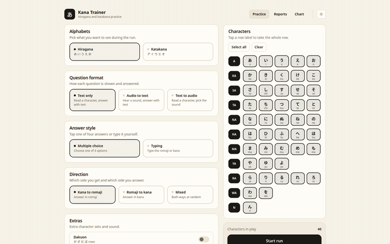
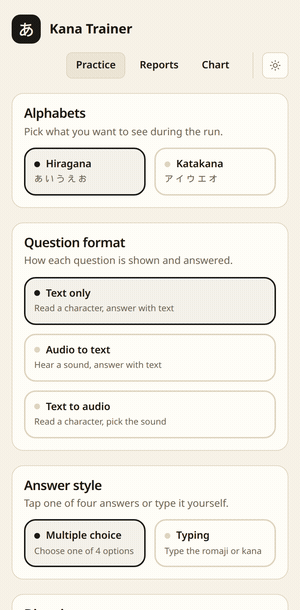

Kana Trainer
Learn the hiragana and katakana alphabets on desktop, tablet and phone. Pick your system below and the download starts straight away.
Version 1.5.3 · released 2026-08-23Choose your system
-
Your systemWindows10 and 11, 64-bit
Installer. Adds Kana Trainer to the start menu.
Download 2.5 MB -
Your systemmacOSApple silicon and Intel
Disk image. Drag the app into your Applications folder.
Download 6.0 MB -
Your systemDebian and Ubuntu.deb, 64-bit
For Debian 13 and later, Ubuntu 24.04 and later, Mint and Pop!_OS.
Download 2.9 MB -
Your systemFedora and openSUSE.rpm, 64-bit
For Fedora, openSUSE and other rpm based systems.
Download 2.9 MB -
Your systemArch Linux.pkg.tar.zst, 64-bit
For Arch, Manjaro and EndeavourOS.
Download 2.7 MB -
Your systemAndroid7.0 and later
Sideloaded apk. Allow installs from your browser when asked.
Download 24.7 MB
How do I install the file I just downloaded?
Windows
Double click the .exe and follow the installer. Windows may
warn that the publisher is unknown, because the app is not signed with a
paid certificate. Choose More info then Run anyway.
macOS
Open the .dmg and drag Kana Trainer into Applications. The
first launch needs a right click on the app and then Open, since
the app is not notarised.
Linux
Open a terminal in your downloads folder and run the line for your distribution.
sudo apt install ./Kana.Trainer_*.deb # debian 13+, ubuntu 24.04+
sudo dnf install ./Kana.Trainer-*.rpm # fedora, opensuse
sudo pacman -U ./kana-trainer-*.pkg.tar.zst # archAndroid
Open the .apk from your notification shade and allow your
browser to install unknown apps when asked.
From source
With a Rust toolchain installed:
cargo install kana-trainerWhat it looks like

